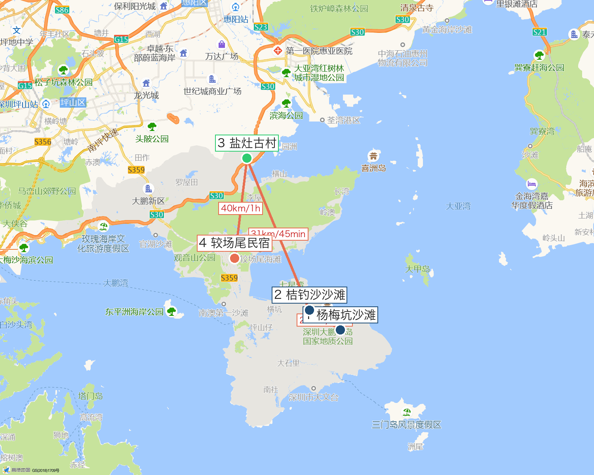

🖨️ 打印/另存PDF
🏖️ 深圳大鹏亲子 2 日
8.22-8.23 · 多家庭通用 · 杨梅坑→桔钓沙→盐灶赶海
📊 一眼看懂
7:00
周六出发
2天1晚
多家庭
14:29
盐灶干潮
~1100/家
预算
8.22 周六进大鹏必须预约通行！
未预约罚 300 扣 1 分。微信"深圳交警"→星级用户→大鹏半岛预约。8.15 早 8:00 抢名额。
🗺️ 行程地图（高德实测）

高德底图 + 标注 · 橙线=开车顺序 · ①杨梅坑 ②桔钓沙 ③盐灶 ④民宿
路段
距离
用时
南沙 → 杨梅坑
195km
约 2h
杨梅坑 → 桔钓沙
2.6km
9 分钟
桔钓沙 → 盐灶
31.2km
45 分钟
盐灶 → 民宿
约 40km
约 1h
为什么这顺序：
盐灶在最北，桔钓沙/杨梅坑在南，先南后北不绕路。看完全部地址点见下方"📍 导航定位"。
📍 导航定位（点击唤起高德）
1
杨梅坑沙滩
新东路56号 · 8:00-19:00
📍 导航
2
桔钓沙沙滩
新东路28号 · 8:00-18:00
📍 导航
3
盐灶古村 ⭐赶海
坝核公路×243乡道 · 24h 免费
📍 导航
4
较场尾民宿（参考）
较场尾路76号 · 自行搜房
📍 导航
手机点"📍 导航"→ 自动唤起高德 App → 定位该点。建议 4 点先收藏。
📅 行程
🚗 7:00 - 9:00 · 195km
南沙 → 杨梅坑
7:00 出发，8:00 前过虎门避堵，车上吃早餐
9:00 - 11:30
杨梅坑沙滩
礁石+沙滩，水清，退潮捡贝壳小螃蟹
11:30 - 12:30
午餐
村口潮汕牛肉店 人均 50 / 自带野餐
🚗 12:30 · 2.6km · 9 分钟
→ 桔钓沙
12:40 - 15:00
桔钓沙沙滩（备选赶海）
银滩+玻璃海，14:29 干潮可捡贝壳；林荫躲晒
🚗 15:00 · 31.2km · 45 分钟
→ 盐灶古村（一路往北）
15:45 - 18:30
盐灶古村赶海 ⭐首推
银叶树湿地滩涂，蛏子/螃蟹/贝类多；17:30 看日落
18:30 - 19:30
盐灶晚餐
就近吃，别饿肚子开 1h 车
🚗 19:30 · 约 40km · 1h
→ 较场尾民宿
Day2 周日：
8:00 自然醒 → 9:30 桔钓沙赶海晨场（车程 12km/20 分钟）→ 11:00 午餐 → 12:00 回程南沙（避 15:00 晚高峰）。
🚨 避坑（精简版）
大鹏 8.22 必须预约通行，未预约罚 300 扣 1 分，8.15 早 8:00 抢
导航"桔钓沙"会导到收费的运动中心，搜"桔钓沙沙滩"
盐灶是湿地保护区，核心区禁采集，在标牌范围内赶海
赶海穿溯溪鞋/包趾凉鞋，拖鞋禁！盐灶泥滩加手套
杨梅坑村 10-14 点单行管制，9:00 前到；村口海鲜宰客，皮皮虾 188 可砍 98
桔钓沙 10:30-15:00 紫外线爆表，小宝必须遮阳棚下；冲凉 15/次
鹿嘴山庄礁石湿滑，小宝严禁爬；快艇摩托 2 岁小宝不能上
8.21 晚查天气，台风/暴雨改期；日落前 19:00 撤出盐灶滩涂
💰 预算（每家庭）
项目
单价
住宿
300/间/晚（自行搜）
餐饮
人均 80-100/天（每家庭 2.5 人算）
油费
约 320/车（含盐灶）
停车
60/车/天
观光车/冲凉/装备
约 100/家
合计
约 1100-1200/家
信息来源：携程·大鹏政府·大鱼潮汐表·21财经·高德 POI（盐灶/桔钓沙/杨梅坑实测 2026-08-12）。装备清单见另文件《深圳大鹏-装备清单》。
🖨️